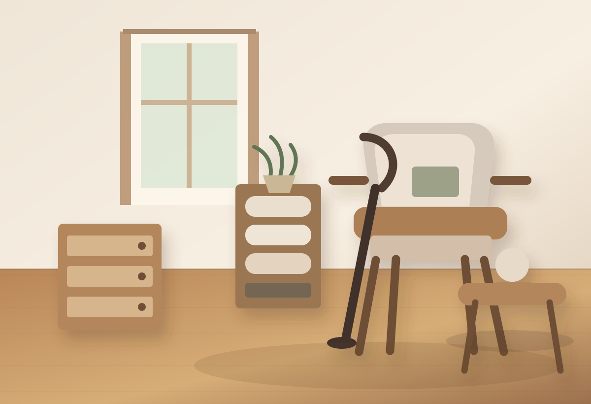

忙しさで後回しになる
やろうと思っていても、予定や仕事で心と身体がついてこない方へ。
FOR YOU
片づけが止まっている理由は、人それぞれです。 まだ依頼するか決めていない段階でも、今の暮らしを言葉にするところから始められます。
やろうと思っていても、予定や仕事で心と身体がついてこない方へ。
掃除、洗濯、調理がしにくく、毎日の負担が積み重なっている方へ。
本、道具、趣味のものが多く、暮らしの中で生かし直したい方へ。
自分のペースや学び、休息の時間を取り戻したい方へ。
介護、入院・退院、暮らしの変化を前に、住まいのことを相談したい方へ。
自分らしく、心地よく暮らしたい気持ちを住まいにつなげます。
FIRST STEP
OKAPAは、いきなり物を減らすところから始めません。 今の暮らしを伺い、一緒に手を動かしながら、掃除や収納が続きやすい形へ整えていきます。
困っていること、暮らしのリズム、大切にしたい時間を丁寧に伺います。
判断を急がず、残すもの、動かすもの、手放すものを一緒に見つめます。
収納、掃除、洗濯、調理など、日々の動きが楽になる場所を整えます。
Tidy up後の質問や再訪問を通して、暮らしの中で続く形を育てます。
ABOUT
日々の暮らしは、仕事、家族、予定の変化、心身の状態に影響を受けながら形づくられています。 片づけや掃除が大切だと分かっていても、思うように続けることは誰にとっても簡単ではありません。
OKAPAは、片づけを良し悪しで判断するのではなく、その方の暮らしに寄り添いながら、 住まいのあり方を一緒に見つめます。物を減らすことや空間をきれいにすることだけでなく、 人と物、人と空間、人と人との関係に自然な巡りが戻っていくことを大切にしています。
どんな場所で休み、食べ、学び、創造し、明日へ向かう力を養いたいのか。住まいと望む暮らしをつなげます。
作業として整えるだけでなく、考え、選び、動かし、戻していく過程に伴走します。
その後も無理なく続く仕組みを一緒につくり、日々の流れがなめらかになる状態を目指します。
LIFE CHANGE
ご家族の病気や介護、入院・退院、生活環境や住まいの変化。 そうした出来事が起こると、ご本人だけでなく、支えるご家族の暮らしも心も大きく揺れます。
OKAPAは、困難な状況でも空間を整理するだけではなく、 ご本人やご家族がどんな場所で暮らしたいのかを大切にしながら、住まいのあり方を一緒に考えます。

動線、休める場所、必要な物の置き場所を見直し、日々の生活に戻りやすい環境を整えます。
ご本人の安心と、ご家族の負担の両方を見つめながら、無理のない住まいの形を考えます。
怖さや不安がある段階でも大丈夫です。まずは暮らしの状況を言葉にするところから始めます。
入院・退院、介護、家族の不安が重なっているときも、まだ整理できていないままで大丈夫です。 まずは今の状況を、LINEで短く聞かせてください。
LINEで相談するPROGRAM
合計3ヶ月の期間で、お片付けのパートナーとして寄り添います。 Tidy up後も質問を受けながら、暮らしに戻っていく形まで見守ります。
今の暮らし、困っていること、大切にしたいことを丁寧に伺います。
望む暮らしと住まいの距離を見つめ、作業の方向を一緒に決めます。
一緒に手を動かしながら、物の役割と空間のはたらきを整えます。
暮らしの中で自然に続くよう、質問や再訪問を通して支えます。
OKAPAでは、Tidy upの過程に寄り添う人をTidyistと呼んでいます。 ご本人の思いや判断を大切にしながら、住まいのあり方を一緒に整えます。
一人はご本人に寄り添うパートナー。もう一人は、望む暮らしを考えながら進められるように、 作業のリズムを整えてフォローする伴奏者です。
片づいているか、片づいていないかだけで暮らしを見ません。 今の住まいが、どんな時間や思いを抱えてきたのかを丁寧に受け止めます。
ほっと休める場所、食事を楽しむ時間、学びや趣味に向かう余白。 その方が大切にしたい暮らしから、物の場所や空間の役割を考えます。
物が本来の役割を果たし、場所がはたらきを取り戻すと、 人の動きや時間の流れにも変化が生まれます。
きれいにして終わりではなく、その後の暮らしの中で無理なく続く仕組みを一緒につくります。 小さな実践が日々の安心につながることを大切にしています。
一人で過ごす暮らしにも、家族や身近な人と共に過ごす暮らしにも、それぞれの時間や役割があります。 その時々の変化に合わせて、住まいのあり方を一緒に見つめていきます。
STORY
漫画家MOSAさんのOKAPAプログラム。自然や植物、動物を大切にされ、 科学や物理への学びにも深い関心をお持ちの方です。 作品に『マンガ人類学講義 ボルネオの森の民には、なぜ感謝も反省も所有もないのか』があります。
床、水回り、収納の前提が整い、日々の掃除に手が伸びやすくなりました。
キッチンと本の場所が機能し、食事や科学・物理の学びに向かいやすくなりました。
3日に1回から週に1回ほど、水拭きをする流れが自然に生まれました。
DESIRE
MOSAさんのご希望は、自然と調和した暮らし、「菌と共生する」こと。 環境に負荷のかかる洗剤を避け、食事も無添加を意識し、有機の調味料を大切に使われていました。 同時に「健康的な暮らしがしたい」「科学の学習に没頭したい」という思いも見えてきました。
本が1500冊以上ある一方で、本棚がほとんどなく、衣類を洗う、干す、しまう仕組みも不安定でした。 床に物が溢れ、埃が溜まりやすく、水回りの掃除もしにくい状態から、清掃、レイアウト確認、不用品の整理を進めました。
作業後の打ち合わせで、MOSAさんの中に「良い菌は白い」というイメージが浮かびました。 良い菌と共に暮らすためには、カビや臭いをケアできる、掃除しやすい環境が必要だと見えてきました。
2日目には本棚9本を組み立て、デスク、ベッド、衣類収納、キッチン、洗濯、トイレ、浴室の仕組みを整えました。 一人では止まりやすい大きな作業も、パートナーがいることで生活に戻れる形まで進められます。
AFTER
再訪問したお部屋は、入った瞬間に空気が違いました。 床は素足で気持ちよく過ごせる状態になり、水拭きの習慣も生まれていました。 自炊がしやすくなり、本も学びに戻れる状態へ。住まいの機能が、望む暮らしを支えはじめていました。
「掃除がしやすくなりました」 「水拭きが気持ちよくなりました」 「自炊がしやすくなりました」 「学びに戻れそうです」
MOVIE
OKAPAプログラムの空気感や、住まいが少しずつ動き出していく様子を動画でもご覧いただけます。
MOSAさんの暮らしや、Tidy upで見えてきた方向性をご覧いただけます。
住まいの仕組みが整い、暮らしが動き出していく過程を紹介しています。
CONTACT
「こんなことも相談できる？」という小さな問いかけでも大丈夫です。 OKAPAは、お一人おひとりのこれからの暮らしに寄り添います。
LINEから気軽にメッセージをください。
ご相談はこちら
LINEで相談する